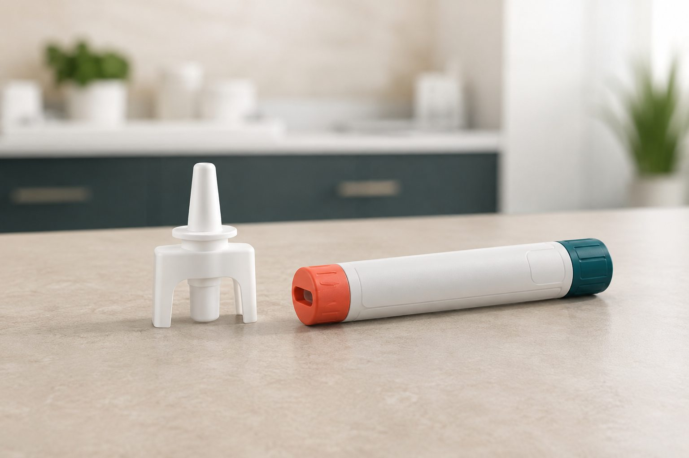
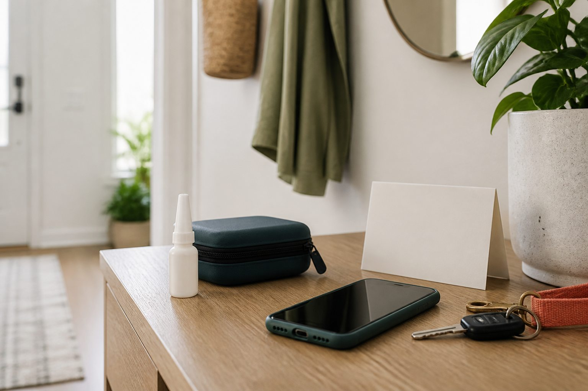
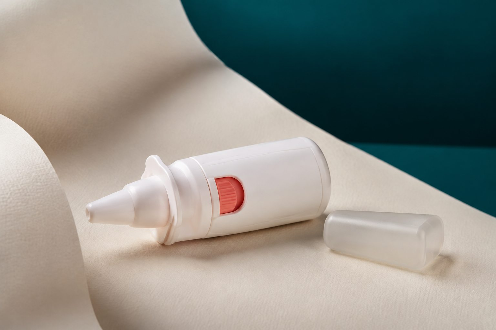

What Age Groups Can Use Epinephrine Nasal Spray?
Approved ages and weight thresholds depend on the specific prescription product and country. A healthcare professional must confirm eligibility.
Explore the basics →Current pollen forecast for Berlin, Germany
✦ Find a specialistEmergency allergy care, reimagined
Facts before you need them.
What this prescription format is, when emergency care matters, and what to discuss with your clinician.
Scroll to discover
Trust Elements
Product-label firstClear distinctions between general education, prescribing information, and individual medical advice.
Nasal Epinephrine Spray ReviewsPersonal experiences can add context, but they do not replace approved evidence or guidance from a healthcare professional.
Patient suitability
An easy-to-navigate overview to prepare you for a conversation with your healthcare professional.
Approved ages and weight thresholds depend on the specific prescription product and country. A healthcare professional must confirm eligibility.
Explore the basics →Product-specific fit
For anaphylaxis, prompt emergency treatment and follow-up care are essential. Always follow your prescribed action plan.
Understand readiness →Prescriber review
Suitability, dosage, and age requirements depend on the specific product and must be assessed by a healthcare professional.
See common questions →Format comparison
A prescription nasal spray and an injection device deliver epinephrine in different ways. Do not substitute, swap, or use either differently without medical guidance and the product’s Instructions for Use.

Swipe horizontally to compare formats →
Prescription and access
Nasal epinephrine is prescription-only. Suitability is specific to the individual, the product label, and local availability — not a one-size-fits-all choice.
01 / Prescription
A clinician considers allergy history, current treatment, patient factors, the approved label, and the emergency plan already in use.
02 / Availability
A healthcare professional or pharmacist can explain approved local options, dispensing, coverage, and supply.
03 / Review
Bring the full picture.
Share relevant conditions, medicines, and nasal concerns with your prescriber or pharmacist before deciding on a format.
Eligibility and instructions differ by product and region. Review the prescribing information that applies where you live.
Why this format
A nasal epinephrine spray can provide a needle-free prescription format for emergency treatment. The right choice still depends on the approved product, your individual needs, and a clinician-led action plan.
A compact nasal format may be easier for some people to carry and use as directed. Availability, dosing, storage, and suitability are always product-specific.
Nasal Epinephrine Spray Basics
Intranasal epinephrine is a prescription medicine delivered through the nose for emergency treatment of severe allergic reactions. Use only the product prescribed to you and follow its Instructions for Use.

You may see terms such as intranasal epinephrine, epinephrine nasal spray, nasal epinephrine, or the brand name neffy®. Product and brand names are not automatically interchangeable.
Approved prescription products are used for emergency treatment of severe allergic reactions, including anaphylaxis, in the patients described by their labels.
Follow the signs listed in your action plan. Trouble breathing, throat or tongue swelling, faintness, widespread hives, or severe symptoms affecting more than one body system can signal an emergency. Use prescribed epinephrine promptly and seek emergency help as directed. Anaphylaxis Definition
Nasal Epinephrine Features
The device delivers a measured dose through the nose according to its product-specific Instructions for Use. Technique, dosing, and repeat-use instructions vary.

It is administered through a nasal device rather than an injection needle. Always use the device exactly as its instructions describe.
Emergency action should never wait for symptoms to worsen. Follow the prescribed label for timing, repeat dosing, and emergency follow-up.
Symptom relief and the need for another dose are product- and situation-specific. Carry the prescribed quantity and seek emergency care as directed.
Nasal Epinephrine and Allergy Sprays
A prescription epinephrine spray is for emergency treatment specified by its approved label—not routine relief of everyday allergy symptoms. Read more about Epinephrine Nasal Spray for Allergy.
Pediatric use depends on the specific product’s approved age or weight range. A caregiver should follow the child’s prescription, action plan, and device instructions. Anaphylaxis in Children
No. Common over-the-counter allergy nasal sprays generally contain other medicines and should not be assumed to contain epinephrine.
No. A routine allergy spray is not a substitute for prescribed epinephrine in an anaphylaxis emergency.
They use different medicines for different purposes. Nasal epinephrine is a prescription emergency treatment; routine allergy sprays are typically used to manage nasal allergy symptoms.
Nasal Epinephrine Use and Access
Keep prescribed emergency treatment accessible and protected according to its label. Check storage conditions and expiration dates regularly.
Keep it available whenever your prescribed action plan calls for emergency epinephrine, including during school, work, travel, and everyday activities.
Yes, when it is prescribed and carried within its labeled storage conditions. Make sure trusted people know where it is and how your action plan works.
Storage and expiry checks
Use the packaging and Instructions for Use to confirm temperature limits, protection needs, quantity to carry, and replacement timing.
Shipping, Returns and Support
Shipping procedures depend on the dispensing pharmacy, seller, product storage requirements, and destination.
Delivery times vary by pharmacy, stock, prescription processing, and location. Confirm timing before relying on an order.
Medicine return rules vary and may restrict returns after dispensing. Check the seller’s policy and local regulations.
Contact the dispensing pharmacy or seller with the prescription and order details. Ask a pharmacist about product handling or replacement.
Before it is needed
Check the package on arrival, confirm the expiration date, and read the storage and Instructions for Use information.
Your next good question
Prepared feels powerful.
Bring a few clear questions to your next appointment and create a plan that works for your life.
Back to top ↑